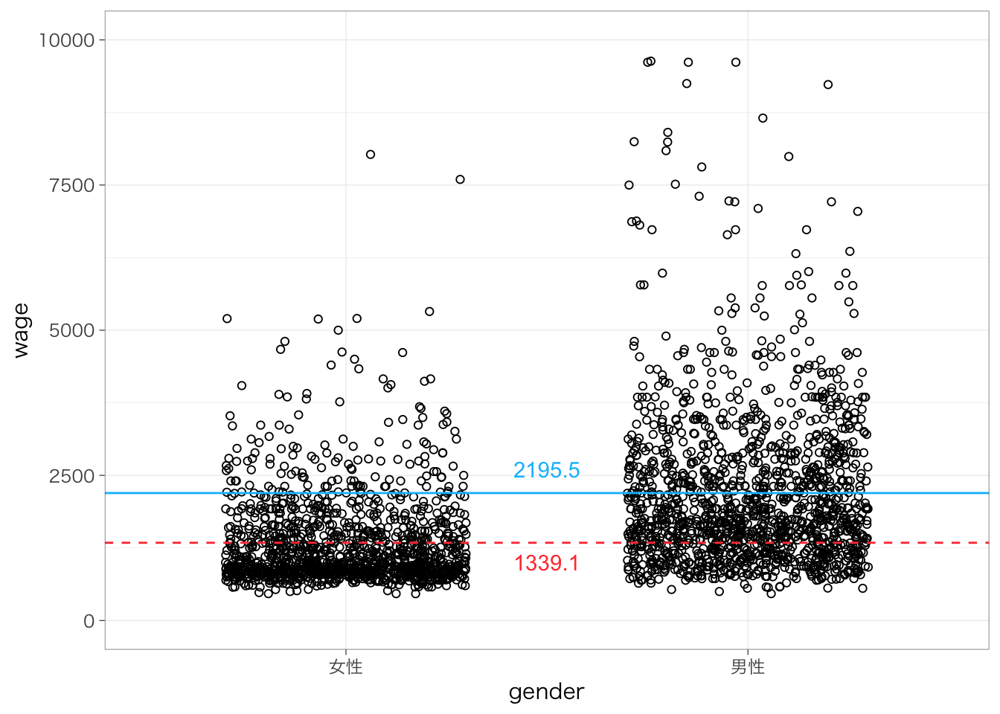
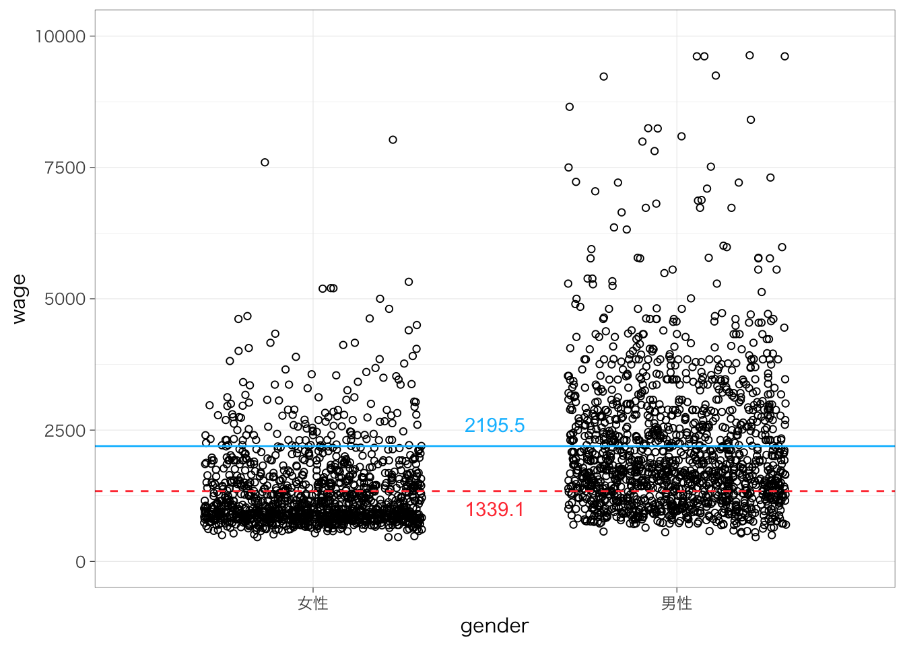
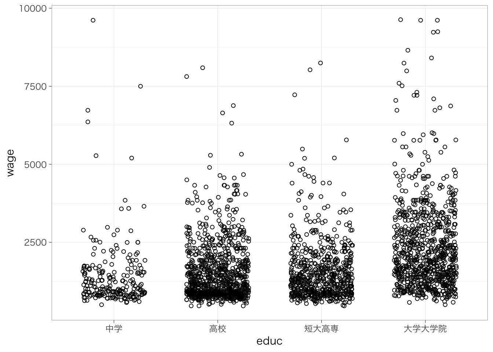
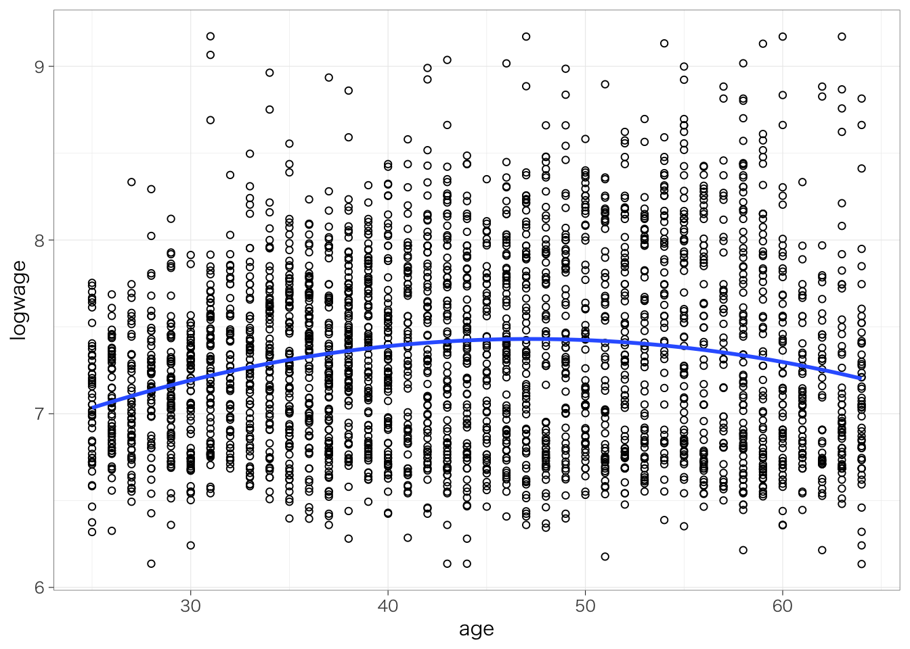

7.4 （発展）非線形の関連
7.4.1 対数変換
用いる変数が正規分布から乖離しているときや、変数の単位に依存せず効果の大きさを測定したいときには、変数を対数変換することを検討するとよい。社会科学系では、底がeの対数（自然対数）を取ることで変数を対数変換することが多い。Rではlog()という関数で自然対数変換ができる。次のようにして、賃金を対数変換した変数を作ることができる。
piaac <- piaac %>%
mutate(logwage = log(wage))2つの変数の分布を比較してみよう。
piaac %>%
ggplot(aes(x = wage)) +
geom_histogram()## `stat_bin()` using `bins = 30`. Pick better value with `binwidth`.
piaac %>%
ggplot(aes(x = logwage)) +
geom_histogram()## `stat_bin()` using `bins = 30`. Pick better value with `binwidth`.
対数変換した後の変数は、対数変換する前の変数よりも正規分布に近づいていることがわかる。
7.4.1.1 自然対数と対数関数について
\[ e = \lim_{t\rightarrow0}(1 + t)^{\frac{1}{t}} \simeq 2.7182818\cdots \] で定義される数のことをネイピア数といい、\(e\)と書く（円周率\(\pi\)みたいな感じ）。慣習上、ネイピア数\(e\)を底とする指数\(e^x\)を\(\exp(x)\)と表記したりする。
\(\log_a x\)のように表される関数を対数関数といい、次のように定義される：
\[ a^y = x \leftrightarrow y = \log_a x \]
とくに底が\(e\)の場合を自然対数という。社会科学系の文脈ではこのときには底を省略して、\(e^y = x \leftrightarrow y = \log(x)\)というふうに書かれることが多い。
7.4.1.2 対数を使った場合の回帰分析
先にみたように、数的思考力スコアと対数賃金の散布図を書くと、次のようになる。
piaac %>%
ggplot(aes(x = numeracy, y = logwage)) +
geom_point(shape = 1) +
geom_smooth(method = "lm", se = FALSE)## `geom_smooth()` using formula 'y ~ x'
対数変換した後の賃金を従属変数として、回帰分析を推定してみよう。
reg_res <- lm(data = piaac, logwage ~ numeracy)
summary(reg_res)##
## Call:
## lm(formula = logwage ~ numeracy, data = piaac)
##
## Residuals:
## Min 1Q Median 3Q Max
## -1.31652 -0.39318 -0.05807 0.33222 2.14472
##
## Coefficients:
## Estimate Std. Error t value Pr(>|t|)
## (Intercept) 6.0351509 0.0688414 87.67 <2e-16 ***
## numeracy 0.0043809 0.0002311 18.95 <2e-16 ***
## ---
## Signif. codes: 0 '***' 0.001 '**' 0.01 '*' 0.05 '.' 0.1 ' ' 1
##
## Residual standard error: 0.518 on 2726 degrees of freedom
## Multiple R-squared: 0.1164, Adjusted R-squared: 0.1161
## F-statistic: 359.3 on 1 and 2726 DF, p-value: < 2.2e-16なお、対数変換した変数を新たに作成しなくても、次のように書くことで、回帰分析のコード中で対数変換を行う事ができる。以下でも同じ結果を得ることができる（結果は省略）。
lm(data = piaac, log(wage) ~ age)numeracyの係数は、数的思考力スコアが1ポイント高いと、対数賃金が0.004ポイント高いということを意味する。対数をとった場合、（微小な）変化は%の変化に一致する（後述）。すなわち、数的思考力スコアが1歳高いと、賃金が0.4%高いということを意味している。
7.4.1.3 対数を使った場合の回帰分析：なぜ%になるのか
以下のような単回帰分析について考える。
\[ y = \beta_0 + \beta_1x \]
このとき、\(x\)を1単位増やしたときの\(y\)の変化分を\(\Delta y\)と表すことにする。すると
\[ \begin{align} y + \Delta y &= \beta_0 + \beta_1 (x + 1) \\ y + \Delta y &= (\beta_0 + \beta_1 x) + \beta_1 \\ \Delta y &= \beta_1 \\ \end{align} \]
\(\Delta y = \beta_1\)となる。すなわち、\(\beta_1\)は、\(x\)を1単位増やしたときに\(y\)がどれだけ増えるかに一致する。
では、次のような式のときはどうだろうか？
\[ \log(y) = \beta_0 + \beta_1x \]
同じように、\(x\)が1単位増えたときの\(y\)の変化分を\(\Delta y\)と表すことにする。すると、
\[ \begin{aligned} \log(y + \Delta y) &= \beta_0 + \beta_1(x + 1) \\ y + \Delta y &= \exp(\beta_0 + \beta_1x + \beta_1) \\ y + \Delta y &= \exp(\beta_1)\exp(\beta_0 + \beta_1x) \\ y + \Delta y &= \exp(\beta_1)y \\ \Delta y &= (\exp(\beta_1) - 1)y \end{aligned} \]
となり、xが1単位増えたときに\(y\)は\((\exp(\beta_1) - 1)\)倍ぶんだけ増える、ということがわかる。実際の値を計算してみると、次のようになる：
\[ \begin{align} \beta_1 &= 0.1 \leftrightarrow \exp(\beta_1) - 1 \simeq 0.11 \\ \beta_1 &= 0 \leftrightarrow \exp(\beta_1) - 1 \simeq 0 \\ \beta_1 &= -0.1 \leftrightarrow \exp(\beta_1) - 1\simeq -0.10 \\ \end{align} \]
\(\beta_1\)が0に近い値ならば、おおむね「\(x\)が1単位高いと、\(y\)が\(100 \times \beta_1\)%高い」といえる。
ただし、係数の絶対値が大きくなるほど\(\beta_1\)と\(\exp(\beta_1) - 1\)のずれが大きくなるという点は頭の片隅に入れておくとよい。図にするとこんな感じで、0から離れるほど点線からずれていく：

従属変数だけではなく、独立変数についても対数を取ることができる。その場合の解釈はそれぞれ次のようになる：
| 従属変数 | 独立変数 | 解釈 |
|---|---|---|
| \(y\) | \(x\) | \(x\)が1単位高いと、\(y\)が\(b_1\)高い |
| \(\log(y)\) | \(x\) | \(x\)が1単位高いと、\(y\)が\(100 \times \beta_1\)%高い |
| \(y\) | \(\log(x)\) | \(x\)が1%高いと、\(y\)が\(\beta_1 / 100\)高い |
| \(\log(y)\) | \(\log(x)\) | \(x\)が1%高いと、\(y\)が\(\beta_1\)%高い |
7.4.1.4 係数の絶対値が大きい場合の対数の解釈
例えば次のように対数賃金を従属変数、性別を独立変数とする回帰分析を推定してみよう。
reg_res <- lm(data = piaac, logwage ~ gender)
summary(reg_res)##
## Call:
## lm(formula = logwage ~ gender, data = piaac)
##
## Residuals:
## Min 1Q Median 3Q Max
## -1.40835 -0.35529 -0.07757 0.32873 1.90992
##
## Coefficients:
## Estimate Std. Error t value Pr(>|t|)
## (Intercept) 7.08073 0.01395 507.5 <2e-16 ***
## gender男性 0.46412 0.01918 24.2 <2e-16 ***
## ---
## Signif. codes: 0 '***' 0.001 '**' 0.01 '*' 0.05 '.' 0.1 ' ' 1
##
## Residual standard error: 0.5 on 2726 degrees of freedom
## Multiple R-squared: 0.1769, Adjusted R-squared: 0.1766
## F-statistic: 585.7 on 1 and 2726 DF, p-value: < 2.2e-16gender男性の係数の値は0.464である。この係数は絶対値が大きいため、きちんと\(\exp(\beta_1) - 1\)を計算してやる必要がある。いろいろな方法があるが、ここでは回帰分析の結果をデータフレームにして扱いやすくするためのパッケージであるbroomパッケージを利用する方法を紹介する。まずは、broomパッケージを読み込もう。
library(broom)broom::tidy()関数を実行することで、回帰分析などのモデルの主要な結果をデータフレーム形式へと変換することができる。それぞれ、1行目が切片の推定結果、2行目が男性ダミーの推定結果である。
reg_res_tidy <- reg_res %>%
tidy()
reg_res_tidy## # A tibble: 2 × 5
## term estimate std.error statistic p.value
## <chr> <dbl> <dbl> <dbl> <dbl>
## 1 (Intercept) 7.08 0.0140 507. 0
## 2 gender男性 0.464 0.0192 24.2 2.26e-117この推定結果に含まれるestimateという列に対して\((\exp(\beta_1) - 1)\)という計算を施した新しい列を作成すればよい。
reg_res_tidy %>%
mutate(estimate_exp = (exp(estimate) - 1))## # A tibble: 2 × 6
## term estimate std.error statistic p.value estimate_exp
## <chr> <dbl> <dbl> <dbl> <dbl> <dbl>
## 1 (Intercept) 7.08 0.0140 507. 0 1188.
## 2 gender男性 0.464 0.0192 24.2 2.26e-117 0.591新しく作成した列のgender男性の値は0.591である。つまり、男性は女性と比べて、59.1%賃金が高いということである。
7.4.2 2次関数型
年齢と賃金がどのような関係にあるかを考えてみたい。年齢と賃金の関係は、たんに年齢が上がると賃金が上がるという線形の関連ではなく、年齢が上がるほど賃金の上昇が緩やかになっていって、ある程度年齢が上がると関係が反転する（負の関係になる）ということが考えられる。2次関数を使うことで、こうした関係をうまく表現できる。
\[ y = \beta_0 + \beta_1x + \beta_2x^2 \]
7.4.2.1 係数の読み方
このような場合、\(x\)が1単位増加したときの\(y\)の増加量は、もともとの\(x\)の値によって異なる。\(x\)が1単位増えたときの\(y\)の変化分を\(\Delta y\)と表すとすると、
\[ \begin{align} y + \Delta y &= \beta_0 + \beta_1(x + 1) + \beta_2 (x + 1)^2 \\ &= (\beta_0 + \beta_1x + \beta_2x^2) + \beta_1 + (2x + 1)\beta_2 \\ \Delta y &= \beta_1 + (2x + 1)\beta_2 \end{align} \]
となる。すなわち、\(x\)が1単位増加したときの\(y\)の増加量は、もともとの\(x\)の値によって異なるということになる。回帰式の形状や結果の読み方は次のようになる：
| \(\beta_2\)の係数 | 解釈 | 形状 |
|---|---|---|
| \(\beta_2 < 0\) | xが大きいほど、x1単位の増加に対するyの増加量は小さい | \(-\beta_1/2\beta_2\)を底とする、上に凸な2次関数 |
| \(\beta_2 > 0\) | xが大きいほど、x1単位の増加に対するyの増加量は大きい | \(-\beta_1/2\beta_2\)を底とする、下に凸な2次関数 |
7.4.2.2 変数の作成と結果の解釈
年齢を2乗した変数は次のように作成できる。
piaac <- piaac %>%
mutate(age_sq = age^2)回帰分析を行ってみる：
reg_res <- lm(data = piaac, logwage ~ age + age_sq)
summary(reg_res)##
## Call:
## lm(formula = logwage ~ age + age_sq, data = piaac)
##
## Residuals:
## Min 1Q Median 3Q Max
## -1.28557 -0.44715 -0.03263 0.36524 1.95383
##
## Coefficients:
## Estimate Std. Error t value Pr(>|t|)
## (Intercept) 5.636e+00 1.762e-01 31.98 <2e-16 ***
## age 7.609e-02 8.226e-03 9.25 <2e-16 ***
## age_sq -8.064e-04 9.185e-05 -8.78 <2e-16 ***
## ---
## Signif. codes: 0 '***' 0.001 '**' 0.01 '*' 0.05 '.' 0.1 ' ' 1
##
## Residual standard error: 0.5415 on 2725 degrees of freedom
## Multiple R-squared: 0.03465, Adjusted R-squared: 0.03394
## F-statistic: 48.91 on 2 and 2725 DF, p-value: < 2.2e-16二次曲線の場合、個々の係数だけではあまり解釈ができない。そこで、散布図と回帰直線（曲線）をみてみよう：
piaac %>%
ggplot(aes(x = age, y = logwage)) +
geom_point(shape = 1) +
geom_smooth(method = "lm", formula = y ~ poly(x, 2), se = FALSE)
このように、若いときには年齢による賃金の上昇は大きいけれども、その上昇幅は年齢が高くなるほど小さくなり、高い年齢ではむしろ負に転ずることがわかる。年齢についてはこのように二次曲線をつかうことはしばしば有効である。
なお2乗した変数を別に作らなくても、回帰分析のコード中で2乗した変数を作成することができる。（結果は省略）
lm(data = piaac, log(wage) ~ age + I(age^2))7.4.3 回帰分析の結果をきれいに表示する
先ほどの回帰分析の結果をもう少しきれいに表示したいと思うかもしれない。このようなときに活躍するのがmodelsummaryパッケージである。
library(modelsummary)では、実際に使ってみよう。modelsummary(list(model))（modelという部分には、すでに保存しておいた回帰分析の結果を入れる）というのが最低限のコマンド。
reg_res <- lm(data = piaac, log(wage) ~ age)
modelsummary(list(reg_res)) | Model 1 | |
|---|---|
| (Intercept) | 7.136 |
| (0.044) | |
| age | 0.004 |
| (0.001) | |
| Num.Obs. | 2728 |
| R2 | 0.007 |
| R2 Adj. | 0.007 |
| AIC | 4474.4 |
| BIC | 4492.1 |
| RMSE | 0.55 |
よく論文でみる感じのきれいな見た目になる。とはいえ、まだたとえば変数名が何を指しているかなどは改善の余地がある。オプションを色々指定することで、よりわかりやすい表が作れる。
modelsummary(list(reg_res),
stars = TRUE, # 有意水準を示す印をつける
coef_rename = c("(Intercept)" = "切片",
"age" = "年齢"), # 各変数に名前をつける
gof_map = c("nobs", "r.squared") # サンプルサイズと決定係数のみ記載する
)| Model 1 | |
|---|---|
| 切片 | 7.136*** |
| (0.044) | |
| 年齢 | 0.004*** |
| (0.001) | |
| Num.Obs. | 2728 |
| R2 | 0.007 |
| + p < 0.1, * p < 0.05, ** p < 0.01, *** p < 0.001 |
このように各変数がそれぞれ何の変数なのか名前をつけてやると、読む人にとって見やすい表になる。